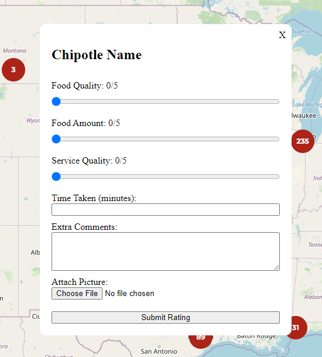

FourthDevBlogChipotle
Chipotle Social Media Site
Tough tough day today. I started the day by formatting the basic layout of the modal for the review page. This included sections for ratings 0-5 stars on food quality, quantity, staff quality, additional notes, and time taken to recieve food. This part went quite well and I was able to get example submissions working as well as resetting the values of the submission after closing/submitting a forum.
I then moved into trying to setup a database so I could start sending the ratings to be posted and seen through an Instagram like feed. I wanted to learn a new DBMS instead of using SQLite, so I decided on PostgreSQL. This is one of the most popular DBMS currently and it is fully open source, with many startups using it as their main data storage system.
This is where this started to go awry, I had no problem downloading the software and getting all the files into their correct places, but when I went to actually start using the software it told me that I had input the wrong password. I tried resetting it multiple times and no matter what everytime it denied me access. This went on for an hour or so and I got so angry that I just went on a walk to clear my head.
By the time I got back I had no interest in trying anything else for the rest of the night and decided to log off. So I’m sure my future self will have a really fun time trying to figure that out tomorrow!!!
Anyways, here is a picture of the forum
